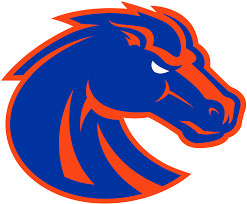
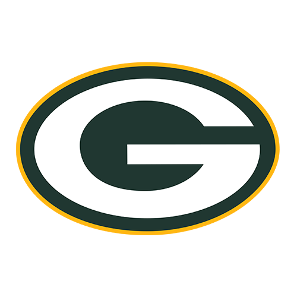
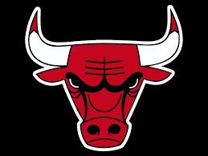

Howdy!
My name is Logan and this is the start to my programming career. Go ahead and learn some things about me, also feel free to contact me if you have any questions.
About Me
I was born in Boise and grew up in Middleton all my life. I graduated from Middleton High School just last year. I never really never had an idea what I wanted to do for my career. I took a robotics class my freshman year in High School. I had a great time learning how to write code for the NXT robots we built in class. I believe I figured out what I wanted to do with my career after taking that class.
Hobbies
I love video games. Anything from Call of duty, to Madden, to Need for Speed, and the list goes on. I also grew up in a family that loves the outdoors. My family were always either hunting, fishing, or sports. That's where my love of sports come from. My three sports that I follow is football, baseball, and basketball.
These are my Favorite sports teams:
- 
Boise State Broncos
- 
Green Bay Packers
-
New York Yankees
- 
Chicago Bulls